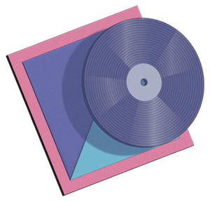

The gut-wrenching pain that 17-year-olds are able to churn out on Wattpad fics is nothing short of
witchcraft. Fanfic writers somehow surpass the boundaries of anguish that mainstream authors dare not cross.
You could blink and suddenly Hazel Grace Lancaster is being killed off in one fatal swoop within the
writer’s own John-Green-free alternate universe. Here's a curated
soundtrack to listen to while weeping over
the evil angst and betrayal Hole4HarryStyles concocted, all from within their childhood bedroom. Prepare to
cry over people that don’t exist—or who don’t know that you do.
To Build a Home by The Cinematic Orchestra
This song is the ultimate boohoo staple for a devastating scene in any modern romance movie. If you need to
mourn the inevitable death of Lily and James Potter somehow written into every Harry Potter fanfic
(even when NOT necessary), crank this shit up. The song is about a couple building a life together and, at
the end, watching it turn to dust—much like Voldemort did to our fav pair.

Liability by Lorde
Liability is for every girl who feels a bit too loud, a bit too much and far too excitable for the quiet
Zayn Malik to ever love. It’s not your fault you scream-cried
when you saw him live in 2014. Listen to this song and write
fanfic where you cast yourself as the shy, doe-eyed,
messy-bun babe he spots from across the stadium.
Possibility by Lykke Li
Possibility is the literal soundtrack to Bella rotting in her room
because her sexy vampire boyfriend ghosted. It’s the best way to
set the New Moon ambience for your possibly more emotional fictional break up with Edward, in the
self-insert y/n fic you found on fanfiction dot net—minus the cliff jumping and Taylor Lautner in an awful
wig. *Cue depression time lapse*
Last Words of a Shooting Star by Mitski
This song is the ultimate breakup anthem for sad girls who just got their hearts broken two chapters into a
mediocre Wattpad story. Mitski chose violence when she wrote, “And you'd say you love me and look in my eyes
/ But I know through mine you were / Looking in yours.” Maybe in another fanfic universe, you and Draco
Malfoy will make it last forever, but your Ravenclaw heart says otherwise.
Mikrokosmos by BTS
If you’re a BTS stan, Mikrokosmos is the perfect song to cry to as you mourn the fact that the
fanfic you’re reading about being Jungkook’s one true love has a one-in-22-million chance of coming true.
However, this song is also a reminder that it takes many, many stars in the sky to make a beautiful night,
just like you are one of many beautiful people who built a community around music… Anyway, find a sweet
fanfic where there’s an epic apocalypse and you’re the only one left for him in the meantime.
Only Ones Who Know by Arctic Monkeys
Nothing screams pastel-collage-shirtless-5SOS-pizza-is-bae-2015-core more than the Arctic Monkeys. Only
Ones Who Know may be one of the saddest songs ever and the longing lyrics can teleport any listener
back to a time in their lives where their greatest love was a fictitious version of Michael Clifford.
There’s no shame in listening to Arctic Monkeys while reading 5SOS fanfic in 2015. There’s just shame in
admitting it out loud now.